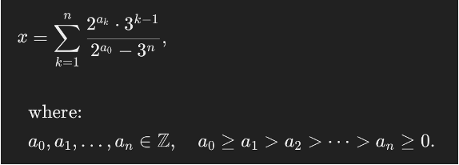
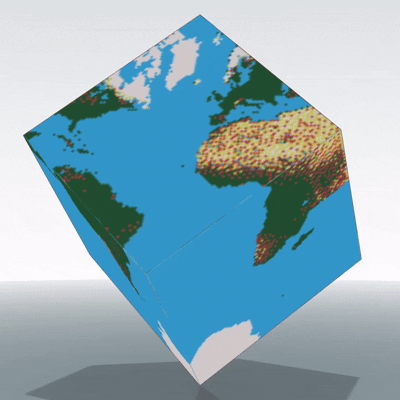
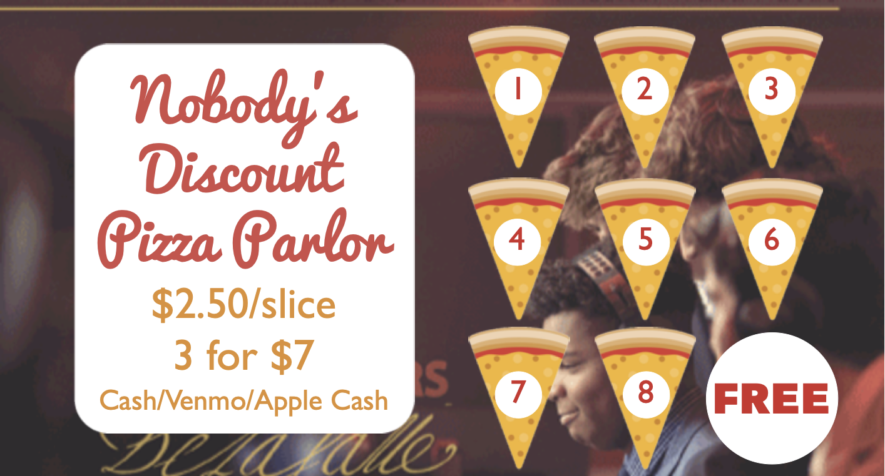

Dear Princeton Admissions Committee,
I’m writing to reaffirm my continued interest in Princeton and to share a few exciting developments in my life. Princeton remains my top choice; if I am accepted, I will happily attend. The Quantum Information and Applied Physics concentration for Electrical and Computer Engineering is quite unique and is a great fit for me.
What I’ve been up to since I applied:
-
I’ve continued to work on the Collatz Conjecture. I came up with an exponential sum Diophantine equation that describes all numbers that are in a Collatz cycle. Any non-trivial solution would disprove the Collatz Conjecture. I contacted Purdue professor Dr. Trevor Wooley who is an expert in Diophantine equations. He told me that my equation would be quite difficult to solve due to the divisibility constraint. I later discovered that my equation was first found in this 1978 paper (bottom of page 263). My formulation:

-
I’m working on my senior thesis. My project will be the world’s largest 3D Rubik’s Cube mosaic by cube count; a cubic world globe made of 5,048 mini Rubik’s cubes that can rotate along its diagonal. I created a template with GIMP and Fusion360, made a design for the internal structure, and have started working on the final sculpture. Each cube is hand solved so that the visible pixels are in the right place. Here is the initial design:

-
I started a pizza business in my school’s cafeteria. My school sells slices of cheese pizza for $3.25, but whole 8-slice pizzas for $12. I could sell slices for $2.50, with some deals, and make money while saving students money. So, I created a brand (Nobody’s Discount Pizza Parlor) and a website, designed and printed loyalty cards, and started working with my friends to see how much we could sell at different lunch periods.

-
I learned Python because of Minecraft. I enjoy watching Minecraft speedrunning, especially a streamer named Couriway. Couriway runs polls where viewers can wager channel points predicting whether he will speedrun Minecraft faster than a certain time. I spent a week learning Python and creating a bot that uses Selenium to scrape my channel points and the channel points wagered on both sides of the prediction. It also utilizes the Google Sheets API to predict his actual probability of success so that it can use a custom Kelly Criterion model I created to mathematically optimize my bets for long term growth. As of today, the script is up and running. After just six speedruns, I’m up 50k channel points.
-
I received an A in Elementary Linear Algebra at Towson University.
-
On top of all this, I have been taking time to enjoy my senior year. I’ve played a lot of pickup basketball which I’m actually not bad at (it helps that I’m 4” taller than my friends). I’ve started going to film club, where my friend group watches and analyzes movies while eating snacks (I’m the official “Secretary of Donuts”). I’m also planning a two-week cross country road trip with four of my friends to visit cities and National Parks after graduation.
I would absolutely love to attend Princeton to keep learning and creating. I know that at Princeton I will enjoy my college experience, and I hope it will become my home.
Thank you for taking the time to read this and consider my application.
Sincerely,
Sean Griffin ‘29